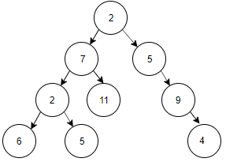

(1) For the tree below, select the choice that provides post-order traversal.
a) 2, 7, 2, 6, 5, 11, 5, 9, 4 b) 2, 7, 5, 2, 6, 9, 5, 11, 4 c) 2, 5, 11, 6, 7, 4, 9, 5, 2 d) 2, 7, 5, 6, 11, 2, 5, 4, 9 e) none of the above
(2) Which of the following is true about a binary search tree?
a) Post order sequence gives increasing order of elements d) Pre order sequence gives decreasing order of elements c) Maximum height of a BST witn n elements is O(log n). d) In order sequence gives increasing order of elements e) none of the above
(3) What is the maximum height of an AVL tree with n nodes?
a) O(n) d) O(n/2) c) O(n * n) d) O(log(n)) e) none of the above
(4) How much time does construction of suffix tree take for a text of size n characters?
a) O(n) d) O(log n) c) O(n * n) d) O(n!) e) none of the above
(5) Which one of the following array elements, sequences stating at index 1, represents a binary min heap?
a) 12 10 8 25 14 17 b) 8 10 12 25 14 17 c) 25 17 14 12 10 8 d) 14 17 25 10 12 8
(6) Suppose we are sorting an array of eight integers using quicksort, and we have just finished the first partitioning with the array looking like this:
2 5 1 7 9 12 11 10
Which statement is correct?
a) The pivot could be either the 7 or the 9. b) The pivot could be the 7, but it is not the 9 c) The pivot is not the 7, but it could be the 9 d) Neither the 7 nor the 9 is the pivot.
(7) Running bubble sort on an array of size n which is already sorted is,
a) O(n) d) O(n log n) c) O(n * n) d) O(log n) e) none of the above
(8) Which statement is correct?
a) Hamiltonian path includes each edge exactly once in a Graph. d) Euler path includes each node exactly once in a Graph. c) Euler Circuit includes each node exactly once in a Graph. d) Hamiltonian Circuit includes each edge exactly once in a Graph. e) none of the above
(9) The Data structure used in standard implementation of Breadth First Search is?
a) Stack d) Queue c) Linked List d) Binary Search Tree
(10) What is the time complexity of the following algorithm? Assume that creating a stack and pushing an element both are O(1) operations, and initially n > 0.
create empty stack S while n>0 do | push (n mod 2) onto S | n=n/2 end while
a) O(1) d) O(n * n) c) O(n) d) O(log n)